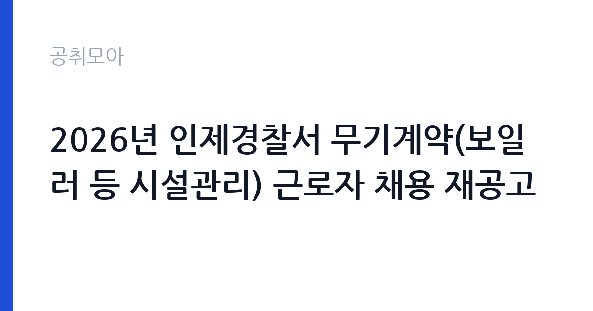

[국가기관] 2026년 인제경찰서 무기계약(보일러 등 시설관리) 근로자 채용 재공고
경찰청 강원특별자치도경찰청 인제경찰서 · 강원 · 마감 2026-10-08 (D-6) · 출처 나라일터

한눈에 보는 모집 조건
| 기관 | 경찰청 강원특별자치도경찰청 인제경찰서 |
|---|---|
| 공고명 | 2026년 인제경찰서 무기계약(보일러 등 시설관리) 근로자 채용 재공고 |
| 고용형태 | 공무직 |
| 근무지 | 강원 |
| 게시일 | 2026-10-02 |
| 마감일 | 2026-10-08 (D-6) |
지원자격, 이렇게 읽으세요
- 공무직(무기계약직 근로자) 1명
- 접수 ~2026-10-08 마감
- 세부 조건은 원문 공고문 확인
자격요건은 에너지관리기능사 이상의 자격을 보유한 것입니다. 기능사 등급 이상이면 되므로 기사나 산업기사 보유자는 물론 기능사 보유자도 지원할 수 있습니다. 학력이나 연령 제한은 원문 공고에서 확인하십시오. 재공고라는 점에 주목하셔야 합니다. 재공고는 1차 모집에서 적격자가 없었거나 미달이 발생했을 때 나오므로, 자격만 갖추면 합격 문턱이 상대적으로 낮습니다. 접수 방법이 방문과 등기우편, 이메일(pks5025@police.go.kr)로 다양해 강원 지역이 아닌 분도 온라인으로 지원할 수 있습니다. 문의처는 인제경찰서 033-460-9831이며, 접수 마감일에는 문의가 몰리므로 미리 연락하시는 것이 좋습니다.
이 공고의 포인트
이 공고의 핵심 매력은 무기계약직이라는 고용 안정성입니다. 계약기간이 정년 만 60세까지로 이어지는 구조라 한 번 합격하면 장기 근무가 가능합니다. 종전 타 경찰서의 동일 직종 공고에서도 계약기간을 정년까지로 명시한 전례가 있습니다. 9급 상당의 직급으로 경찰서 청사와 부속 시설의 보일러와 설비를 관리하는 직무라 업무 범위가 분명합니다. 인제군은 강원도 산간 지역이라 지원자가 수도권 공고보다 적게 몰리는 경향이 있어, 자격 보유자에게는 경쟁률이 유리하게 작용할 수 있습니다. 재공고라는 사실 자체가 이번이 합격 적기임을 보여줍니다.
전형은 어떻게 진행되나
선발은 서류전형과 면접전형으로 진행됩니다. 종전 타 경찰서의 시설관리 공무직 채용에서는 1차 서류전형 후 2차 면접으로 최종 합격자를 결정했습니다. 서류전형에서는 자격증과 관련 경력을 중심으로 평가하므로 에너지관리 분야 근무 경력이 있다면 경력증명서를 빠짐없이 제출하십시오. 면접에서는 시설관리 실무 지식과 청사 근무자로서의 품행, 비상 상황 대응 능력을 평가합니다. 경찰서라는 근무지 특성상 보안 의식과 복무 태도에 대한 질문이 나올 수 있으니 관련 답변을 준비하십시오. 세부 일정과 배점은 원문 공고문에서 반드시 확인하십시오.
원문에서 확인한 전형 방식
○ 모집분야 : 보일러 등 시설관리 ○ 선발직급 : 9급 상당 ○ 고용형태 : 무기계약직 ○ 자격요건 : 에너지관리기능사 자격 이상 소유 ○ 접수기간 : 2026년10월02일~2026년10월08일 ○ 응시방법 : 방문접수 및 등기, 온라인접수(pks5025@police.go.kr) ○ 문의처 : 033-460-9831
이런 분께 추천해요
- 에너지관리기능사 이상 자격을 보유하고 강원 지역 근무가 가능하신 분께 추천합니다. 재공고라 지금이 가장 합격 가능성이 높은 시점입니다.
- 계약직을 전전하다 안정적인 무기계약직을 찾는 시설관리 경력자께 추천합니다. 정년까지 근무할 수 있는 구조가 가장 큰 장점입니다.
- 보일러 운전과 청사 설비 유지보수 경험이 있는 중장년 구직자께 추천합니다. 연령보다 자격과 실무 경험을 보는 자리입니다.
지원 전 체크리스트
- 접수 기간이 10월 2일부터 10월 8일까지 단 6일이므로 마감일을 놓치지 마십시오. 등기우편 접수 시 마감일 도착분 기준인지 소인분 기준인지 원문에서 확인하십시오.
- 에너지관리기능사 이상 자격증 사본의 유효 상태를 확인하십시오. 자격증이 있어도 행정처분이나 말소 이력이 있으면 문제가 될 수 있습니다.
- 무기계약직의 보수표와 정년, 수습기간 조건을 원문에서 확인하십시오. 9급 상당이라 해도 실제 지급액은 공고의 보수 항목이 기준입니다.
- 이메일 접수 시 파일 형식과 용량 제한, 접수 확인 회신 여부를 확인하십시오. 접수 확인 메일이 없으면 전화로 접수 여부를 확인하시는 것이 안전합니다.
모집 일정과 제출 타이밍
접수는 2026년 10월 2일부터 10월 8일까지이며, 주말을 포함하면 실질적인 준비 기간은 며칠 되지 않습니다. 서류전형과 면접 일정은 원문 공고에서 확인하십시오. 접수 기간이 짧은 재공고는 지원자가 한꺼번에 몰리지 않는 대신, 준비된 소수가 합격하는 패턴이 많습니다. 오늘 바로 자격증 사본과 경력증명서, 이력서를 챙겨 온라인으로 먼저 접수하고 부족한 서류는 방문이나 등기로 보완하는 전략이 유효합니다. 면접 일정이 발표되면 경찰서 시설 현황을 미리 파악해 두십시오.
직무 이해하기: 국가기관
경찰서 시설관리직은 청사 보일러의 운전과 유지관리, 냉난방 설비 점검, 청사 내 각종 시설물의 수리와 유지보수를 담당합니다. 겨울철에는 보일러 가동 상태를 매일 점검하고 동파 방지 조치를 해야 하며,平时에는 전기와 급배수, 소방 설비의 이상 여부를 순찰합니다. 경찰서는 24시간 운영되는 관서라 야간과 휴일 당직 설비 대응이 발생할 수 있습니다. 인제경찰서는 강원 산간에 위치해 겨울철 난방 부하가 크고 폭설 대응이 중요한 현장이므로, 혹한기 설비 관리 경험이 있으면 실무 적응이 빠릅니다. 청사방호나 경비 업무와 달리 순수 시설 기술직이라 설비 자격과 손기술이 핵심 역량입니다.
자기소개서 작성 팁
지원서와 자기소개 성격의 서류에는 설비 운전과 유지보수 경험을 구체적으로 적으십시오. 다뤄본 보일러 용량과 연료 종류, 고장 수리 사례를 적으면 평가자가 실무 능력을 가늠할 수 있습니다. 경찰서라는 근무지에 맞게 보안 의식과 청렴한 복무 태도를 언급하는 것도 좋습니다. 재공고에 지원하는 이유를 묻는다면 해당 지역 근무 의사와 장기 근속 의지를 분명히 밝히십시오. 경력이 짧다면 자격증 취득 과정과 실습 경험을 중심으로 성실성을 어필하고, 면접에서 실무 질문에 답할 수 있도록 설비 기초 이론을 복습해 두십시오.
면접 준비 포인트
면접에서는 시설관리 실무 질문과 인성 질문이 함께 나옵니다. 보일러 수위 저하 경보가 발생했을 때의 조치 순서, 동파 예방 방법, 정전 시 대응 절차 같은 상황 질문을 준비하십시오. 경찰서 근무자로서 민원인과 직원을 대하는 태도, 야간과 휴일 근무 가능 여부도 확인 질문으로 나옵니다. 인제 지역 연고나 정주 의사를 묻는다면 솔직하면서도 긍정적으로 답하십시오. 복장과 태도는 단정하게 하고, 경력 사항은 과장 없이 증명서와 일치하게 설명하는 것이 중요합니다. 마지막 질문 시간에는 청사 설비 현황이나 인수인계 방식에 대해 물어 관심을 표현하십시오.
급여·근무조건 읽는 법
보수 수준은 9급 상당을 기준으로 원문 공고문의 보수 항목에서 확인하십시오. 경찰서 무기계약근로자의 보수는 관련 규정에 따라 직급 상당액에 각종 수당을 더해 지급되며, 기본급과 정액급식비, 명절휴가비 등의 지급 조건은 공고마다 명시됩니다. 정확한 금액은 원문 공고의 보수표만이 기준이므로, 과거 타서 공고나 온라인 후기의 금액은 참고용으로만 보십시오. 지원 전에는 기본급에 초과근무수당과 연가보상비 지급 조건을 함께 따져 실수령을 가늠해 보시는 것이 좋습니다. 무기계약직은 4대보험과 퇴직금이 보장되니 해당 조건도 원문에서 확인하십시오.
자주 묻는 질문
- 재공고라서 조건이 나쁜 것 아닙니까?
반드시 그렇지는 않습니다. 접수 기간이 짧거나 지역적 요인으로 지원자가 적었을 가능성이 큽니다. 자격 요건과 근무조건은 1차 공고와 동일하므로 원문을 보고 본인에게 맞는지 판단하시면 됩니다. - 인제 지역 거주자가 아니어도 지원할 수 있습니까?
원문 발췌에 거주지 제한 언급이 없으며 이메일 온라인 접수도 가능합니다. 다만 실제 근무지가 인제경찰서이므로 출퇴근이나 이주 계획을 세우고 지원하십시오. - 9급 상당이면 공무원 신분입니까?
아닙니다. 무기계약근로자로서 공무원이 아닌 근로기준법상 근로자 신분이며, 보수가 9급 공무원에 상당하는 수준으로 책정된다는 의미입니다. 정년과 복무 규정은 기관의 공무직 관리 규정을 따릅니다.
함께 보면 좋은 공고
[국가기관] 보건복지부 아동보호자립과 공무직 채용 일정 변경 공고 — 마감 2026-10-13[국가기관] 2026년 하반기 태백지청 통계조사관(기간제근로자) 채용 공고 — 마감 2026-10-16[국가기관] 국립목포대학교 입학사정관 채용 공고 — 마감 2026-10-15출처: 나라일터 공개정보를 바탕으로 공취모아가 정리한 안내글입니다. 모집 조건·일정은 변경될 수 있으니 지원 전 반드시 원문 공고문을 확인하세요. 본 글은 정보 제공용이며 합격을 보장하지 않습니다.